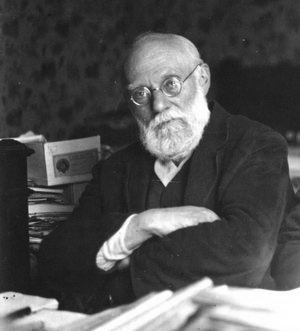

Otletosphère
Otletosphère
| Cartographie relationnelle de Paul Otlet
| Relational network of Paul Otlet

A propos About
L’Otletosphère est une cartographie relationnelle des personnalités et Insitution liées à Paul Otlet. Ce projet part du constat de l'implication forte de Paul Otlet, notamment au sein de la communauté scientifique Belge à la fin du XIVe siècle, mais également dans des ambitions plus internationales. Le domaine d'activité large d'Otlet lui a permis de côtoyer un large nombre de personalités scientifiques, artistes, sociologues, qui ont gravitées autour de lui à travers sa vie, et avec lesquels il a pu entretenir des correspondances, se lier d'amitié, ou collaborer sur des projets communs. L'Otletosphère tente de représenter les entités autour de Paul Otlet de manière plus ou moins distantes, et de mettre en évidence les différents réseaux de personnes ou d'Insitution que Paul Otlet a côtoyé. The Otletosphere is a relational network of people and institutions close to Paul Otlet. This project was created after noticing how heavily influential Paul Otlet was during his prime, especially in the Belgian scientific community. The Otletosphere tries to map the various entities around him, with which he enternained either work relationships, or friendships. The Otletosphere also tries to show not only Paul Otlet's network, but also the organic networks of personalities around him.
Projet HyperOtlet